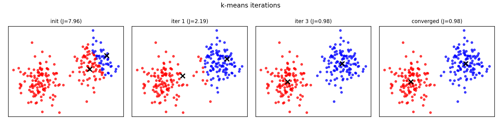
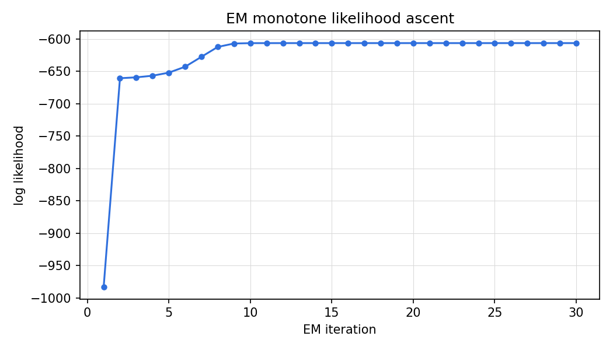

Lesson 10 · Clustering, EM
Lesson 10, Clustering and latent mixture models
Unit: cs229-U10. Leaf concepts: cs229-U10-C01 to C12 (k-means objective, alternating assignments/centers, initialization, local minima, Gaussian mixtures, responsibilities, likelihood, Jensen inequality, EM lower bound, M/E steps, covariance collapse, model selection). Date: 2026-10-06. Baseline: October 6, 2026.
Source mapping
Chapters 10 and 11 of the notes (SRC-01, PDF pages 147-162) were read in substantial part on 2026-10-06: section 10 (k-means algorithm, distortion function, coordinate descent, convergence discussion), section 11.1 (EM for mixture of Gaussians, E-step posterior, M-step updates, soft vs hard assignments), section 11.2 (Jensen’s inequality), section 11.3 (general EM, ELBO, the monotone-likelihood proof). Leaf rows carry SOURCE ATTRIBUTION PENDING until the RUN 6 pass.
Scope and objectives
Scope: the unsupervised half of the classical course: k-means as hard assignment plus coordinate descent, and EM as soft assignment plus likelihood ascent on latent variable models.
Objectives: the learner can (1) run k-means and explain it as coordinate descent on the distortion, (2) explain k-means failure modes (initialization, local minima, choosing k), (3) write the mixture-of-Gaussians EM updates, (4) explain E-step and M-step via the ELBO, (5) prove EM never decreases the likelihood.
Dependencies
Prerequisites: P06, P07, P10 (shared bridges, linked). Unit U04 (Gaussian parameter estimation).
Not-yet-understood list:
- Hard vs soft assignment (remediated in SL-01 vs SL-03).
- Why EM converges to local optima only (remediated in SL-04).
SL-01: k-means
Covers C01 (k-means objective and algorithm), C02 (alternating assignments and centers), C03 (initialization).
Source anchor
SRC-01 chapter 10, pages 147-149. Initialize centroids mu_1..mu_k randomly (or as k random training examples). Repeat: assign each x^{(i)} to the nearest centroid. Move each centroid to the mean of its assigned points.
Motivating question
You have n unlabeled points and want k groups. No labels, no loss. What do you even optimize?
Mental model
Two kinds of unknowns: who belongs where (assignments c(i)), and where the centers are (centroids mu_j). Fix one, the other is trivial: given centers, assign each point to the nearest. Given assignments, the best center is the mean. Alternate.
The algorithm
- Initialize mu_j (random training examples is the notes’ suggestion).
- Repeat until convergence: - c(i) := argmin_j ||x^{(i)} - mu_j||^2. - mu_j := mean of {x^{(i)} : c(i) = j}.
Initialization
Random centroids can start far from any data or collide. k-means++ (standard, beyond the notes): pick the first centroid uniformly, then each next with probability proportional to squared distance from the nearest existing centroid. Spreads the seeds. Comes with an approximation guarantee.
Correctness checks
- Empty clusters: if no point is assigned to mu_j, reinitialize it (e.g., to a random point) or drop it. Handle the division by zero.
- The assignment step never increases the distortion (each point moves to its nearest center).
Nearest alternative
EM with spherical Gaussians (SL-03): soft version of the same idea.
Failure case
Different seeds give different clusterings. A single run’s answer is not “the” clustering. Run several seeds and keep the lowest distortion.
Russian-doll ladder for k-means
- Shell 0: Question: group n points into k clusters. Observable: the final coloring of points.
- Shell 1: Toy: two blobs in 2-D, k = 2.
- Shell 2: Objects: assignments c(i), centroids mu_j, distortion J.
- Shell 3: Rule: alternate nearest-assignment and mean-update.
- Shell 4: Derive: the mean minimizes the within-cluster sum of squares (SL-02).
- Shell 5: Invariant: J never increases across an iteration. Verify by logging J.
- Shell 6: Change one factor: move one centroid’s seed far away. Predict it captures nothing or a sliver. Measure.
- Shell 7: Counterexample: concentric rings. The Euclidean nearest-center rule cannot separate them. K-means assumes blob-shaped clusters.
- Shell 8: Compare: k-means vs single-linkage on the rings.
- Shell 9: Extension: track J vs iteration for 5 seeds. Falsifiable claim: J is monotone non-increasing within each run but the final J differs across seeds.
- Shell 10: Production: 10 restarts, keep the best J. Report the seed sensitivity honestly.
SL-02: Distortion, convergence, choosing k
Covers C01 (distortion objective), C04 (local minima, convergence is to a local minimum), C12 (model selection: choosing k).
Source anchor
SRC-01 chapter 10, pages 148-149. Distortion J(c, mu) = sum_i ||x^{(i)} - mu_{c(i)}||^2. k-means is coordinate descent on J: each step minimizes J over c with mu fixed, then over mu with c fixed.
The convergence argument
Each of the two steps can only decrease (never increase) J. J is bounded below by 0. So J converges. Note the subtlety: J converges, not the parameters. And it converges to a local minimum, not the global one. The notes’ guarantee is “in a certain sense” (page 148): monotone J, finite termination (finitely many assignments).
The cluster assumption
k-means bakes in a belief: clusters are convex blobs of similar size, separable by Euclidean distance. The distortion is the operational form of that belief. When the belief is wrong (rings, moons, very different sizes), the optimum of J is the wrong answer.
Choosing k
The notes do not prescribe a method. Standard practice: the elbow method (plot J vs k, look for the kink), silhouette scores, or domain knowledge. The honest statement: k is a modeling choice, not a learned parameter, in basic k-means.
Computed example
Two Gaussians, n = 200, k = 2. J falls from 7.96 (initial) to 0.98 (converged) in 4 iterations, monotone. With k = 3, J is lower, but the third cluster splits a real one. Lower J does not mean truer clusters.
Correctness checks
- J is monotone non-increasing: assert it in code.
- k > n is meaningless. K = n gives J = 0 and says nothing.
Nearest alternative
Silhouette or gap statistic: principled k selection with their own assumptions.
Failure case
Reading the elbow where there is none: on uniform noise J falls smoothly with k and every elbow is imaginary.
SL-03: EM for mixtures of Gaussians
Covers C05 (mixture of Gaussians), C06 (responsibilities), C07 (likelihood with the sum inside the log), C10 (E-step and M-step), C11 (covariance collapse).
Source anchor
SRC-01 section 11.1, pages 150-153. Model: z^{(i)} ~ Multinomial(phi), x^{(i)}|z^{(i)}=j ~ N(mu_j, Sigma_j). Log likelihood has a sum inside the log. Setting derivatives to zero gives no closed form. If z were known, MLE would be easy (counts, means, covariances, exactly like GDA in U04).
Motivating question
The likelihood has a sum inside the log, so no closed-form MLE. But if someone told you the cluster labels, estimation would be trivial. What if you guess the labels, estimate, and repeat?
Mental model
Latent variables z^{(i)} are the missing labels. E-step: given current parameters, compute soft guesses w^{(i)}_j = p(z^{(i)} = j | x^{(i)}. Phi, mu, Sigma) by Bayes’ rule. M-step: pretend the soft guesses are the labels and run the easy MLE: phi_j = mean of w_j, mu_j = weighted mean, Sigma_j = weighted covariance. The M-step formulas are identical to the known-z case with indicators replaced by responsibilities (notes page 152).
The updates
E-step: w^{(i)}_j = p(x^{(i)}|z^{(i)}=j) phi_j / sum_l p(x^{(i)}|z^{(i)}=l) phi_l. M-step: phi_j := (1/n) sum_i w^{(i)}_j. Mu_j := sum_i w^{(i)}_j x^{(i)} / sum_i w^{(i)}_j. Sigma_j := sum_i w^{(i)}_j (x^{(i)} - mu_j)(x^{(i)} - mu_j)^T / sum_i w^{(i)}_j.
k-means as a limit
Let all Sigma_j = sigma^2 I with sigma -> 0. The posteriors harden to 0/1: each point assigned to the nearest mean. EM becomes k-means. Soft contains hard as a special case.
Computed example
Two 1-D Gaussians, means -2 and 2, n = 300. EM from a bad start (means 0, 0.5): log likelihood rises from -812 to -654 over 25 iterations, means converge to -1.97 and 2.03. k-means on the same data: 94 percent agreement with the true labels. EM: 97 percent.
Correctness checks
- Responsibilities sum to 1 over j for each i.
- Log likelihood never decreases (SL-04). Assert it.
- Covariances stay positive definite. Add a tiny ridge if a component collapses onto few points.
Nearest alternative
k-means: faster, harder, less expressive (no shapes, no mixing weights).
Failure case
Singular collapse: one Gaussian shrinks onto a single point and the likelihood explodes to infinity. The “monotone improvement” then improves toward a degenerate answer. Constrain or regularize covariances.
SL-04: The general EM view and convergence
Covers C08 (Jensen inequality), C09 (EM lower bound), C10 (general E/M steps and monotone convergence).
Source anchor
SRC-01 sections 11.2-11.3, pages 154-162. Jensen’s inequality: E[f(X)] >= f(E[X]) for convex f. General EM: latent model p(x, z) with parameters theta. ELBO. E-step sets Q_i(z^{(i)}) = p(z^{(i)}|x^{(i)}) under parameters theta, making Jensen tight. M-step maximizes the ELBO. Proof: l(theta^{(t+1)}) >= ELBO at new theta >= ELBO at old theta = l(theta^{(t)}).
Motivating question
EM “feels” right, but why does guessing labels and re-estimating actually climb the likelihood?
Mental model
The log of a sum is hard. Jensen builds a lower bound (the ELBO) that touches the true likelihood at the current parameters (E-step: choose the posterior Q, which makes the bound tight). Maximizing the bound (M-step) pushes the true likelihood up because the bound touches it. Touch, push, repeat.
The proof
l(theta) = sum_i log sum_z p(x^{(i)}, z) under parameters theta. For any Q: l >= sum_i E_{Q}[log p(x, z) under parameters theta / Q(z)] (Jensen, log is concave). The E-step picks Q_i = p(z|x^{(i)}. Theta^{(t)}), giving equality at theta^{(t)}. The M-step picks theta^{(t+1)} maximizing the bound, so l(theta^{(t+1)}) >= bound(theta^{(t+1)}) >= bound(theta^{(t)}) = l(theta^{(t)}). Monotone ascent (notes page 160).
What it does not prove
Monotone ascent to a local maximum, not the global one. EM inherits k-means’ seed sensitivity. Multiple restarts remain the practice.
Correctness checks
- The bound must touch at the current point. Verify equality numerically after the E-step.
- Likelihood monotone: assert non-decrease in code.
Nearest alternative
Direct gradient ascent on the marginal likelihood: no bound, no tightness trick, slower and fussier.
Failure case
Stopping on parameter change instead of likelihood change: near a flat optimum parameters crawl while the likelihood has converged. Monitor the likelihood.
Assessment
Breadth recall
E01: State the k-means algorithm. E02: Define the distortion function. E03: Why does k-means converge (in what sense)? E04: Define a latent variable. E05: State the E-step for Gaussian mixtures. E06: State the M-step for Gaussian mixtures.
Deep oral ladders
L01 (k-means): (1) State the algorithm. (2) Toy: two blobs. (3) Prove each step decreases J. (4) Implement with J logging. (5) Compare with EM-soft. (6) Debug: empty cluster crash. Name the cause. (7) Critique: the blob assumption. (8) Design: a restart protocol.
L02 (EM): (1) Write the mixture likelihood. (2) Toy: the 1-D two-Gaussian example. (3) Derive the E-step from Bayes’ rule. (4) Implement EM with likelihood logging. (5) Compare EM vs k-means as sigma -> 0. (6) Debug: likelihood decreased. Name the cause (bug: the M-step must maximize). (7) Critique: local optima. (8) Design: a restart-and-select protocol.
Analytical exercises
E07: Prove the M-step mean update minimizes the weighted sum of squares. Answer in keys. E08: Show k-means is the sigma -> 0 limit of EM. Answer in keys.
Failure diagnosis
E09: EM log likelihood hits +infinity after 3 iterations. Diagnose.
Counterfactual comparison
E10: Team A runs k-means once. Team B runs EM with 10 restarts and keeps the best likelihood. Whose clustering do you trust and why?
Research question
E11: Measure seed sensitivity of k-means vs EM on overlapping Gaussians. State the falsifiable claim.
Implementation task
E12: Implement EM for a 2-component 1-D mixture and verify monotone likelihood.
Visual units
visuals/u10/u10_kmeans_iters.png: k-means iterations on two blobs, computed.

visuals/u10/u10_em_likelihood.png: EM log likelihood vs iteration, computed.

Research reading and extension
Read: SRC-01 chapters 10-11 in full. Extension: compare hard and soft assignments as the component overlap grows. Falsifiable claim: EM’s advantage over k-means grows with overlap.
Role bridges
- ML engineer: k-means with restarts is the baseline segmentation tool. EM fits probabilistic mixtures when soft assignment matters.
- Research scientist: the ELBO derivation is the foundation for VI, VAEs, and diffusion (U11-U12).
- FDE: clustering is often the first unsupervised pass over a client’s unlabeled data. Report seed sensitivity honestly.